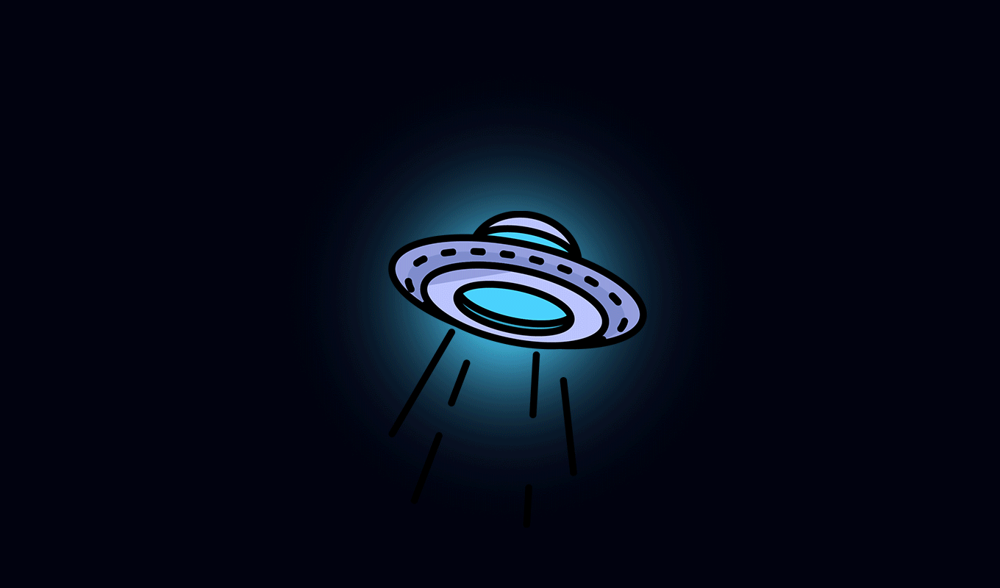
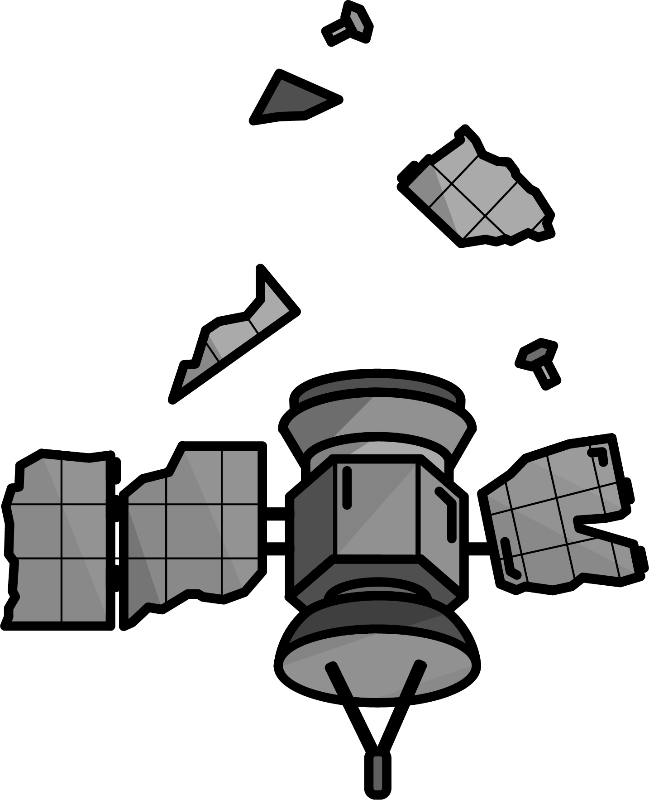
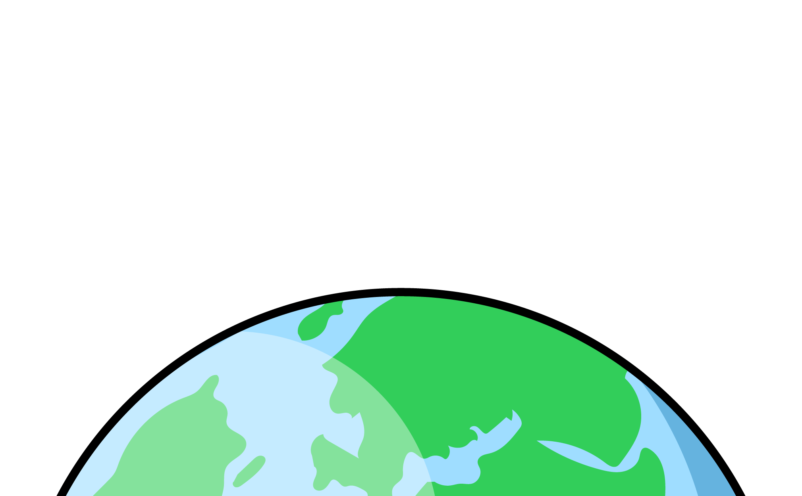

지구감옥
관련 기술 소개
캐슬러 신드롬
지구감옥
지구는 감옥이 되어가고 있어요.
지구 궤도상에는 10cm 이상의 쓰레기가 약 4만개
작은 파편까지 모두 포함하면 100만개 이상의 쓰레기가 떠돌고 있어요.

이러한 쓰레기는 총알보다 8배 빠른속도로
인공위성 혹은 탐사선과 충돌 할 경우 치명적인 피해를 끼쳐요.
우주로 향하는 무분별한 발걸음이 지속된다면
2030년에는 지금의 3배에 가까운 우주쓰레기가 지구 궤도를 돌 것이며
2050년에는 이러한 쓰레기가 인류를 지구에 가두게 될거예요!

작은 파편은 대기권에 돌입할 때 연소되지만
대형파편은 다 연소되지 못해 지구에 직접적으로 피해를 끼치기도 해요.
지금 이 순간에도 지구는 감옥이 되어가고 있으며
매년 400개 이상의 파편이 지구로 추락중이예요
